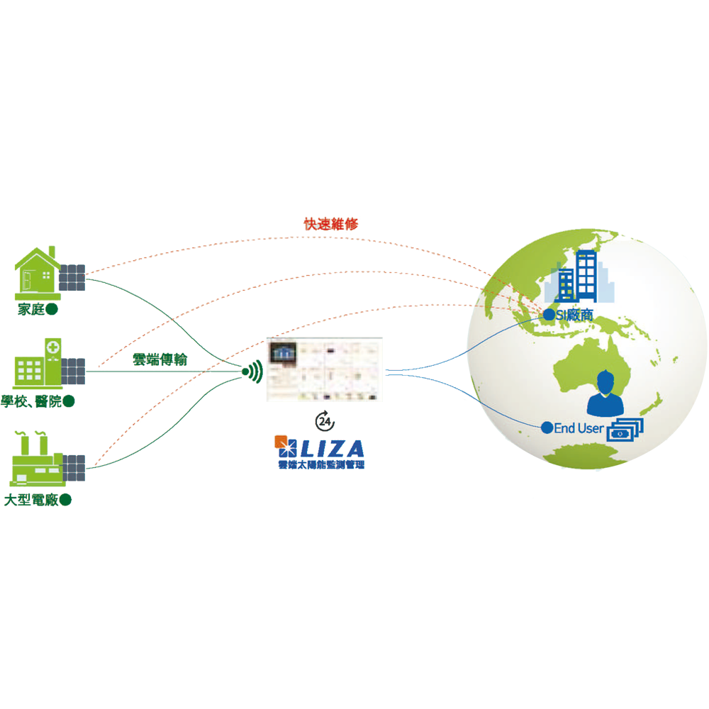

效能分析
提供多項太陽能板發電標準比較，如發電效率是否與日照強度匹配、發電量是否符合預期標準、天氣記錄與發電資訊比較等等；另外，也可預估回收年限資訊， s提供成本回收估算、成本回收報表及發電衰退報表。提供管理者最完整的效能分析報告。
狀況監測
監測太陽能板即時用電資訊，可呈現多場域及單場域之日照、溫度、發電功率、用電功率、PR、RA等項目，並且顯示歷史發電紀錄，也可讓管理者比較日/月/年之總發電功率、 總發電量、總日照累積、總耗電功率、總耗電量、總減碳、節省費用/電費等相關紀錄。
智能診斷
當發電效率下降或異常時，即時通知使用者和系統業者，提高報修速度，縮短太陽能板異常排除時程。同時，系統業者可直接在異常記錄上標註保養紀錄，做為系統業者與使用者間的互動平台。
適用各種需求
大小場域皆適用
可依不同發電規模提供不同的太陽能發電監測硬體套件，且安裝容易！不但可解決大面積、多場域的管控問題，也可達到24小時即時監控的最佳管理效果。 並藉由LIZA再生能源監測管理，可幫助管理者得到最即時的發電監測及完整的效能分析，及24小時不間斷的智能異常診斷，讓太陽能發電系統達到最佳的運轉效率。

確保您的投資
專家診斷、智能管理
長期：加速回收投資，維持賣電的利潤，縮短回收年限。
中期：提升管理效率，使用者可遠端管理多國場域，清楚掌握設備資訊，提高太陽能板發電的黃金年限。
短期：降低管理成本，以系統即時通知異常狀況，取代傳統人力巡邏，有效減少太陽能板閒置時間。
LIZA再生能源監測管理
ASE 提供完整的再生能源監測系統建置服務，另外更包括 節能服務 、 綠色能源 、 智能監控 、 修繕改裝 四大服務範疇，依照不同的需求，一次性地為您量身訂做完整的能源管理系統，無論是舊式系統改裝、全新的系統建置，ASE 皆有相關的專業服務。